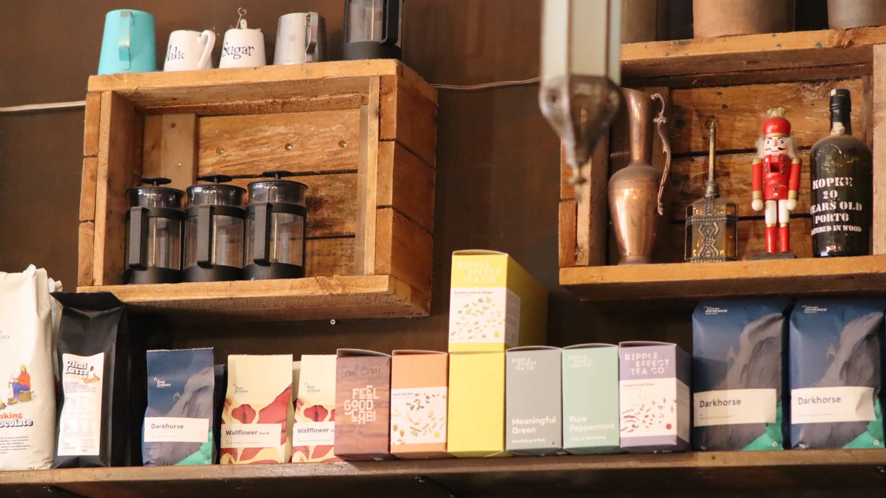
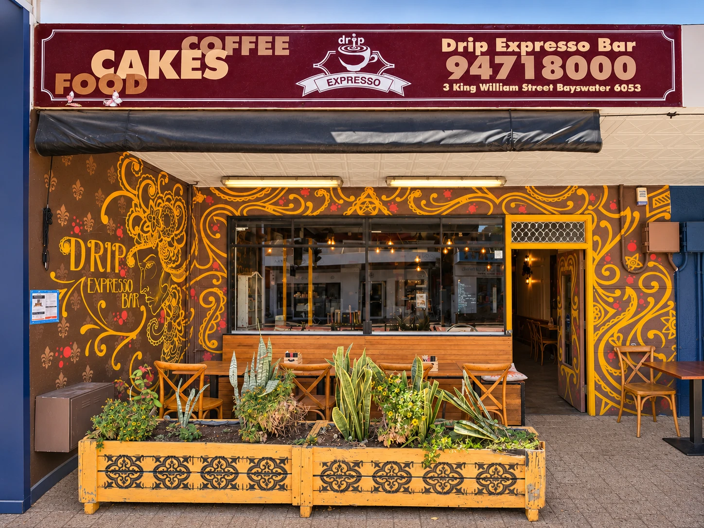
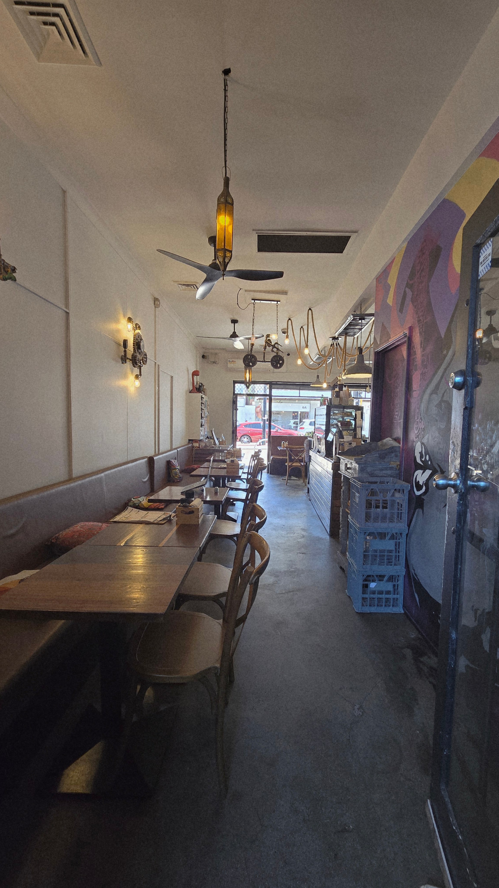
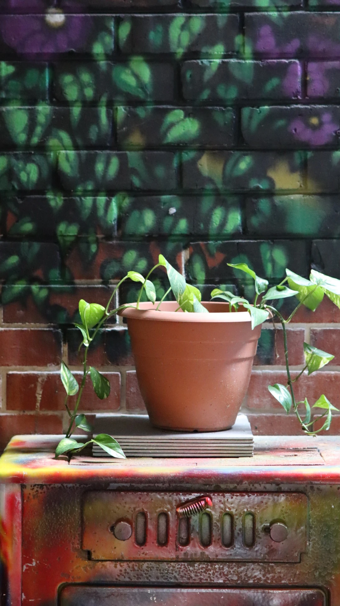

OUR CAFÉ
A Vietnamese
Café in Bayswater
Good coffee, homemade food and
a relaxed, welcoming space
right across from Bayswater Station.
Specialty CoffeeBrunch & FoodA Welcoming Space


OUR CAFÉ
Good coffee, homemade food and
a relaxed, welcoming space
right across from Bayswater Station.

THE SPACE
Chill, work, catch up or simply enjoy
a good coffee in a space full of character.

Independent design preview, not the official café website. Menu and hours from the supplied menu, reviewed 24 October 2026. Confirm current details and holiday hours with the café. Photographs of the café supplied for this preview, shown with display crops and edge shading only. The shopfront picture is an edited image and may differ from the real shopfront. Food photographs carried over from the existing approved menu preview.